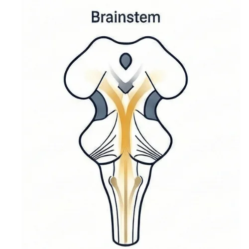
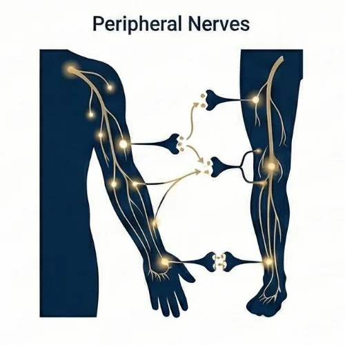
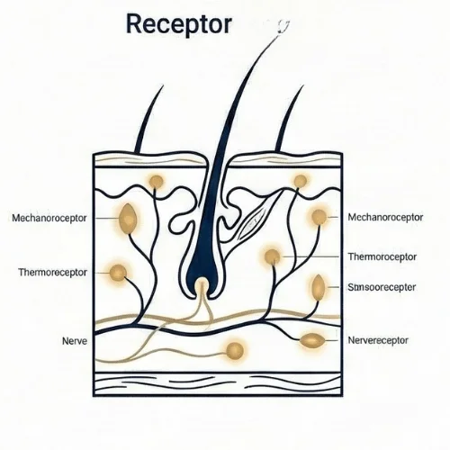
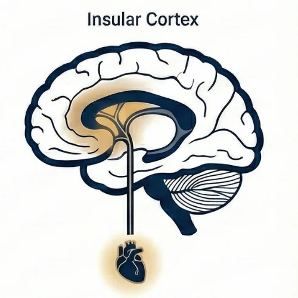
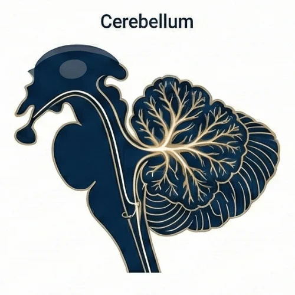
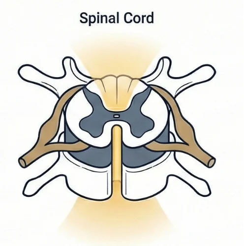
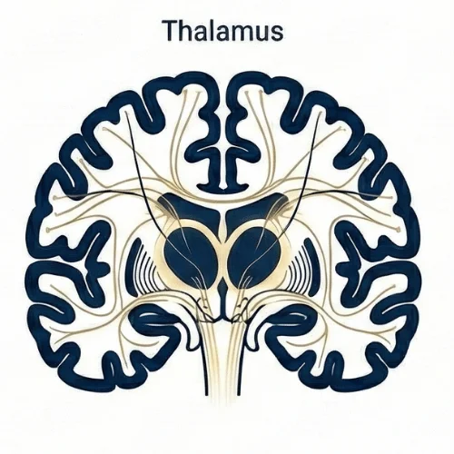
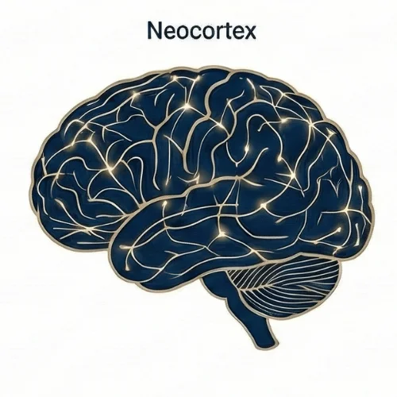

🧠 神経タイプ診断
この診断では、いくつかの質問に答えていただくことで、
あなたの不調パターンがどの神経領域に関連しているかを分析します。
結果に基づいて、最適なアプローチ方法とドリルをご提案します。
症状は
体の片側のみに出ますか？
例：右肩だけ痛い、左膝だけ違和感がある等
症状の反対側に
過去の怪我の経験はありますか？
例：右肩が痛いが、過去に左足を骨折した等
症状の箇所に
感覚の異常はありますか？
しびれ、ピリピリ感、感覚の鈍さ等
いつも同じ側（片側）で
症状が繰り返し起こる？
怪我や痛みがいつも同じ側に出る等
動かなくても痛い、
鈍痛や不快感が常にある？
不器用でスポーツが苦手？
バランスが悪く、
背骨が硬い？
ボディワークは好きだけど
ボールスポーツは苦手？
ヨガやストレッチは得意だが、球技は苦手等

痛い箇所をマッサージすると悪化したりしませんか？
その場合、反対半身（右肩の痛みなら、左半身）で過去の怪我の感覚刺激や、ミラーイメージを行います。
- いつも片側で痛みが起こる
- 高血圧の問題がある
- 猫背、巻肩
- 捻挫などの怪我をすることが多い

モーターコントロールを使って末梢神経の粘弾性を改善していきましょう！
- 筋力低下が起こっている
- 感覚がおかしい感じがする（感覚の低下、ピリピリ、痺れ）
- ストレッチなど、体を過度に伸ばされて体を傷めたことがある

怪我などが原因で、外部の刺激を正しく脳に伝えられていない事で中枢神経に不具合が起こっている可能性があります。
感覚に問題がある箇所のレセプター刺激をメインに行いましょう！
- 過去に手術をした経験がある
- 打撲のあざ、怪我の傷跡が残っている
- 着圧の服が好き
- たこや、皮膚が硬くなっている箇所がある
感覚のテスト（ケガの箇所と周りの皮膚）
痛い箇所をマッサージすると悪化したりしませんか？
その場合、反対半身（右肩の痛みなら、左半身）で過去の怪我の感覚刺激や、ミラーイメージを行います。
- いつも片側で痛みが起こる
- 高血圧の問題がある
- 猫背、巻肩
- 捻挫などの怪我をすることが多い
ジャンプテストで左右の脳幹を決める

自律神経の調整を行ったり、痛みの強さを決定するエリアでもあります。
とにかく不快感がずっとある人、動かなくても辛い人は、島皮質に影響が大きい呼吸などからはじめましょう！
- 動かなくても常に調子が悪い
- 体の不調に感情が大きく影響されている
- 不安感が強い
- 日々のルーティンにこだわりが強い
自分の心拍を正確に数えられる（アプリ使用）

左右でどちらの小脳かをRAPSのテストで確かめて、苦手な方にアプローチしてみましょう！
※苦手な側の小脳の問題＝苦手な側の体側でモーターコントロールを行う
- 手先が不器用
- 物を掴むときに手足が震える
- 起立性低血圧（立ちくらみ）がある
- 人混みが苦手

まずは脊髄関連のモビリゼーションから始めましょう！
- 両側に痛みや動きの問題が起こっている
- 揺れながら歩いている、バランスが良くない
- 脊椎関連の問題（ムチウチ、狭窄、ヘルニアなど）
- 体幹の弱さを感じる
- 長く立っていると背筋が疲れてしまう

動きがぎこちない人、ヨガやピラティスなど、自分の体に注意を向けるのは得意だけど、スポーツは苦手な人はこのタイプです。
動きの意識を外側に持っていくワークで体の不調やパフォーマンスが劇的に変化します！
- 動きを意識しすぎてギコちない動きをしてしまう
- 右半身、左半身がうまく識別できない時がある
- ヨガやピラティスなどボディワークで体を意識する事が得意

右半身は左の皮質、左半身は右の皮質が動かしていますね！
まずは左右差をチェックしましょう。
※盲点が大きい方と反対側の皮質の機能低下＝盲点が大きい側の体側でモーターコントロールを行う
例：右目の盲点なら、左皮質の問題。右半身のドリルを行う。
- 体の片側（同じ側）ばかりぶつける
- 片側の聴力が低下している
- 体の左右差を強く感じる